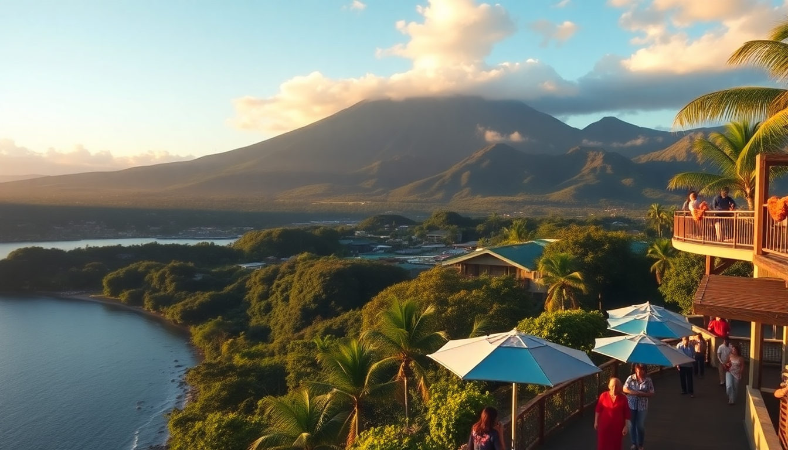

Where to Stay in Arenal: Best Hotels for Every Budget

We pulled into La Fortuna after a bumpy bus ride from San José, and the first thing that hit me was the heat—thick, humid, and smelling faintly of sulfur from the hot springs. The second thing was the volcano itself, a perfect gray-green cone that dominated the skyline. Over the next week, I slept in a budget hostel, a mid-range lodge, and a splurge-worthy resort. Here’s what worked, what didn’t, and where you should actually book your room.
What area should you base yourself in around Arenal?
The volcano doesn’t have a single town at its base. Most lodging clusters in three zones: La Fortuna town center, the road between La Fortuna and the volcano (Route 142), and the quieter hills around El Castillo. Each gives you a different experience.
- La Fortuna town center – Best for walkability, restaurants, and nightlife. We grabbed dinner at Soda La Hormiga here (cheap casados) and walked to the central park. Hotels here are cheaper but you’ll drive 15–20 minutes to most volcano hikes.
- Route 142 (the strip toward the volcano) – This is where the big resorts and hot springs sit. You’ll need a car or taxi, but you’re right next to Arenal Volcano National Park and the Mistico Hanging Bridges. We stayed here for two nights and loved the convenience.
- El Castillo – Quieter, hillier, with fewer tourists and better volcano views. We drove up here for sunset at Restaurante Las Garzas and saw howler monkeys in the trees. Great if you want peace, but you’ll drive 25 minutes to La Fortuna for groceries or tours.
What are the best budget hotels in Arenal?
If you’re traveling on a shoestring, you don’t have to sleep in a dorm room. I found two places that gave us comfort without breaking the bank.
- Arenal Hostel Resort – Don’t let the name fool you; it’s a hostel with private rooms starting around $40 a night. The pool is fed by thermal water, and the shared kitchen saved us money on breakfast. We met a couple from Germany here who’d been cycling across Costa Rica.
- Cabinas Las Colinas – Basic, clean, and right in La Fortuna. No hot springs, no frills, but the owner gave us a hand-drawn map to Río Fortuna Waterfall that saved us the guided tour fee. Rooms run about $50–60 a night.
What are the best mid-range hotels in Arenal?
This is the sweet spot. You get hot springs, decent food, and a comfortable room for $100–$150 a night. I’d book one of these three.
- Hotel Lomas del Volcán – We stayed in a standard room here, and the volcano view from the terrace was the best I saw without paying luxury prices. The on-site restaurant serves a good gallo pinto breakfast, and the hot springs pool is small but never crowded.
- Arenal Manoa Hotel – More resort-like, with multiple pools and a swim-up bar. The grounds are huge, and we saw toucans in the trees by the parking lot. Rooms are spacious, and the buffet breakfast is included. It’s on Route 142, so you’ll need a car.
- Tilajari Resort Hotel – A bit farther from the volcano (about 15 minutes toward San Carlos), but the hot springs here are the most natural-feeling of the mid-range options. We soaked at night under a sky full of stars. The rooms are dated but clean.
What are the best luxury hotels in Arenal?
If you’re celebrating something—or just want to feel like you’re in a rainforest spa—these two are worth the cash. Expect $250–$500 per night.
- Nayara Springs – Adults-only, with private plunge pools fed by volcanic water. Each villa has an outdoor shower and a view of the volcano. We splurged for one night, and the service was ridiculous: they brought us fresh fruit by the pool every hour. Book the Arenal Volcano Hike tour through the concierge—it includes a private guide.
- The Springs Resort & Spa – This is the biggest and most famous luxury option. It has 28 hot springs pools spread across the property, plus a water slide and a full spa. We used their Club Rio package to access tubing on the river. It’s family-friendly, so expect kids everywhere.
What are the best hotels for hot springs access?
Half the reason to stay in Arenal is the hot springs. Some hotels include them in the room rate; others charge extra for day passes. Here’s the honest breakdown.
- Tabacón Thermal Resort & Spa – The gold standard. The hot springs here are the most developed, with cascading pools, waterfalls, and a swim-up bar. But a room costs $400+ a night. If you’re not staying here, you can buy a day pass for $75–$90. We did the day pass and felt it was worth it for the variety of pools.
- Baldi Hot Springs Hotel & Spa – Cheaper than Tabacón, with a massive water park vibe. Slides, swim-up bars, and loud music. Fun for a day, but I wouldn’t want to sleep here—the noise carries.
- Hotel El Silencio del Campo – Mid-range, with natural-looking thermal pools set in gardens. No slides, no crowds. We spent an afternoon here and saw a sloth in the tree above the pool. Rooms run about $120 a night.
When is the best time to visit Arenal?
I went in late November, which is the tail end of the green season (rainy season). The volcano was clear in the mornings, and clouds rolled in by 2 PM. That pattern holds for most of the year.
- December to April (dry season) – Best weather, clearest volcano views, but highest prices and crowds. Book hotels 3–4 months ahead.
- May to November (green season) – Rainy afternoons are normal, but mornings are often brilliant. Lower prices, fewer tourists, and everything is lush. We had the Mistico Hanging Bridges almost to ourselves in November.
- July and August – A short dry spell within the green season. Good compromise if you can’t travel in winter.
FAQ
Is it worth staying in La Fortuna or closer to the volcano? It depends on your priority. La Fortuna gives you walkable restaurants, shops, and nightlife. Staying closer to the volcano (Route 142) means quicker access to hikes, hanging bridges, and hot springs. If you have a car, I’d split your stay: two nights in La Fortuna for town vibes, two nights on Route 142 for nature access.
Do I need a car to get around Arenal? Not strictly, but it helps a lot. Buses run between La Fortuna and the volcano area, but they’re infrequent. We rented a car from Vamos Rent-A-Car in La Fortuna for $35 a day and used it to reach Arenal Volcano National Park, Río Fortuna Waterfall, and El Castillo. Without a car, you’ll rely on taxis ($5–$10 per ride) or organized tours.
Are the hot springs safe to swim in? Yes, but pay attention to temperature. Natural hot springs near the volcano can reach scalding levels. Stick to developed pools at hotels like Tabacón or Baldi, where temperatures are regulated. We saw a sign at a free river spot warning of 50°C water—don’t jump in without checking first.
Conclusion
- Base yourself in La Fortuna for walkability and budget options, or Route 142 for hot springs and volcano hikes.
- For budget travelers, Arenal Hostel Resort and Cabinas Las Colinas offer clean beds under $60.
- Mid-range winners are Hotel Lomas del Volcán for views and Arenal Manoa for pools.
- Splurge on Nayara Springs for romance or The Springs Resort for family fun.
- Book Tabacón day passes if you can’t afford the room—it’s the best hot springs experience.
- Visit in November for low crowds, green scenery, and decent weather.